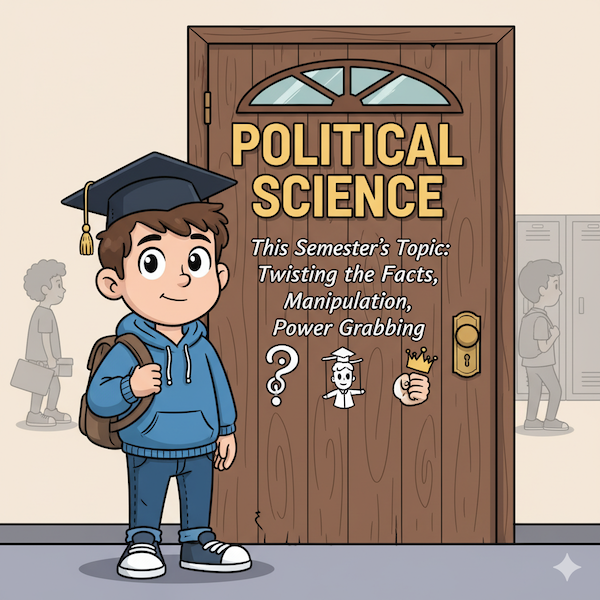
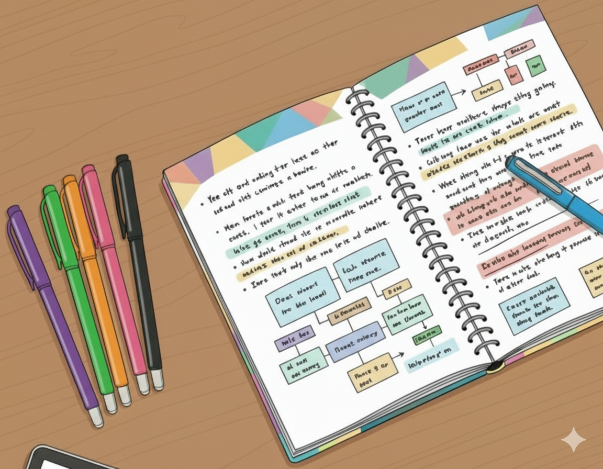

Dilip IAS
Master the UPSC Civil Services Examination with expert guidance, personalized strategies, and a proven track record of success.

PSIR Notes

Political Science
Brief summary of whatever you'd like to add more to the main point. 3 previous details.
International Relations
Brief summary of whatever you'd like to expand on the main point.
Current Affairs
Monthly and annual analysis of national and international developments.
Other Notes (General Studies)
Polity
Detailed notes on the Indian Constitution, Governance, and Political System.
Ancient History
Study of the Harappan Civilization, Vedic Period, and major dynasties.
Ethics
Case studies and theoretical frameworks for Ethics, Integrity, and Aptitude (GS Paper IV).

Previous Year Questions

PSIR Optional PYQs
Topic-wise compiled questions and model answers for PSIR Paper I & II (2013-2024).

General Studies - All Papers
Access to compiled PYQs for GS Paper I, II, III, and IV, including essay topics.
Testimonials
"This part is for testimonials from students"
ABC
Alumnus/Student
"This part is for testimonials from students"
ABC
Alumnus/Student
"This part is for testimonials from students"
ABC
Alumnus/Student